Confecciona tu Plato: Curate your own global journey by selecting from our world-class ingredients.
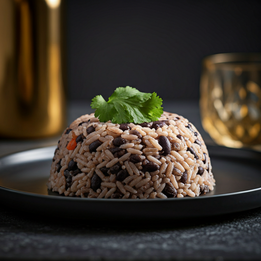
Cuba
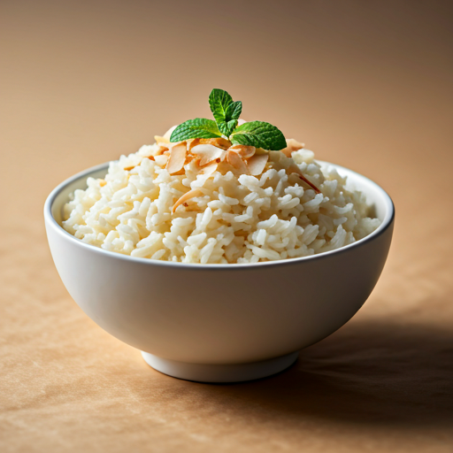
Caribe
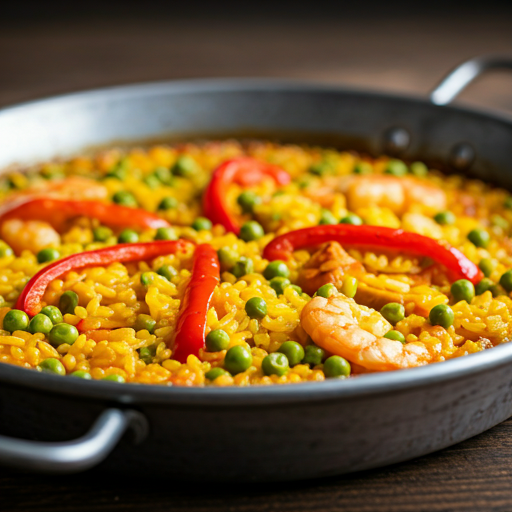
España
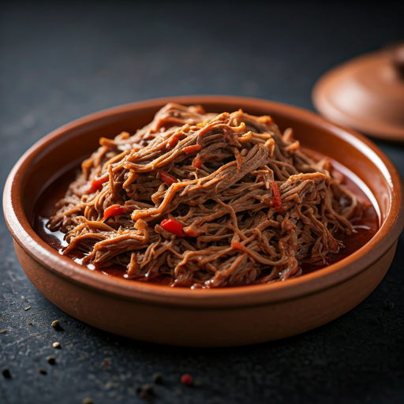
Slow-cooked shredded beef with peppers.
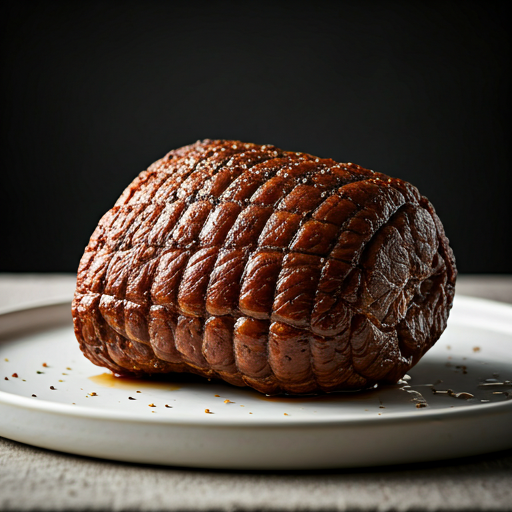
Traditional shredded beef, Venezuelan style.
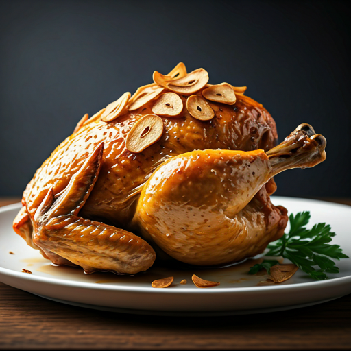
Sautéed chicken in a vibrant garlic wine sauce.
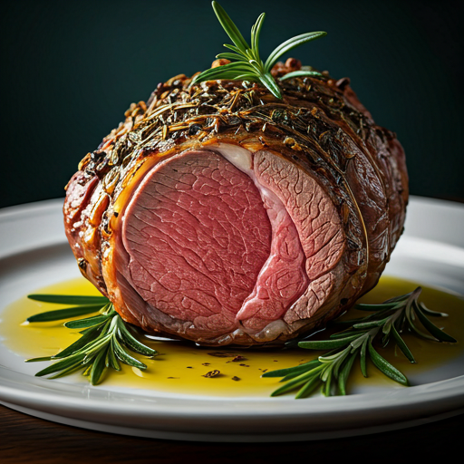
Tender roasted lamb with aromatic herbs.
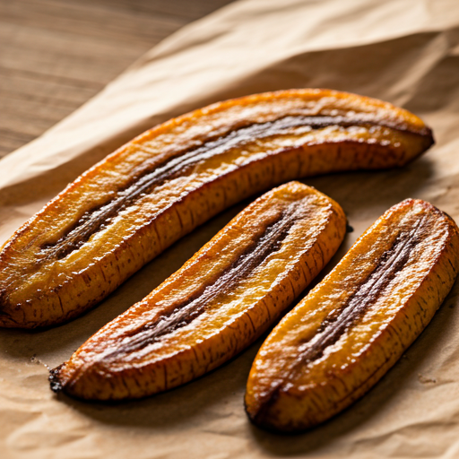
Plátano frito
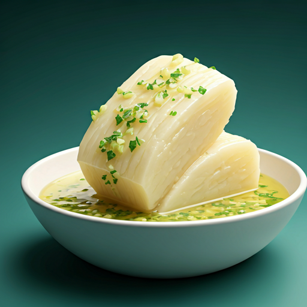
Yuca con mojo
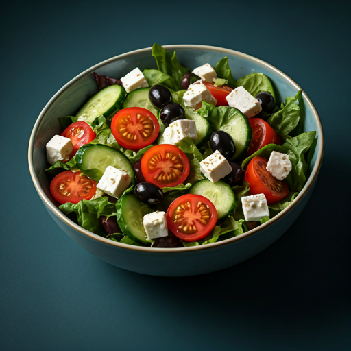
Ensalada
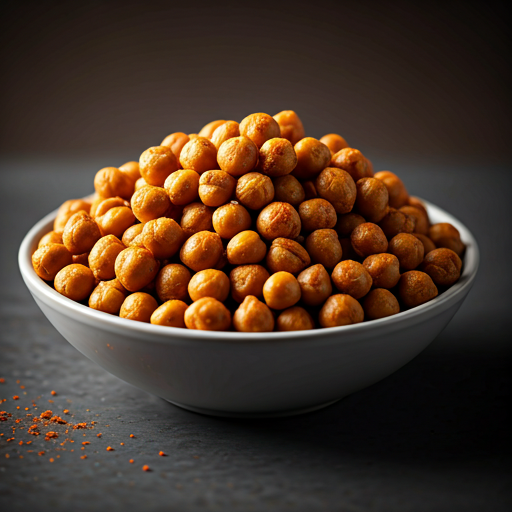
Garbanzos fritos